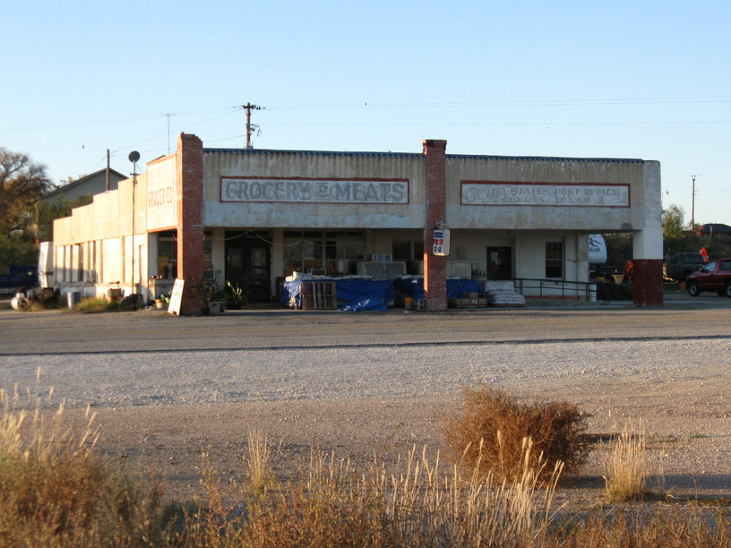
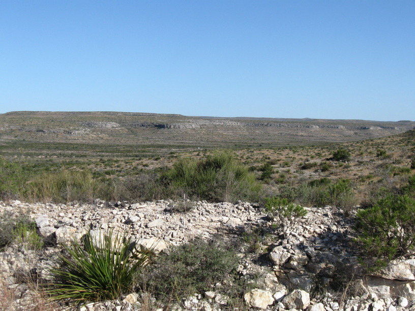
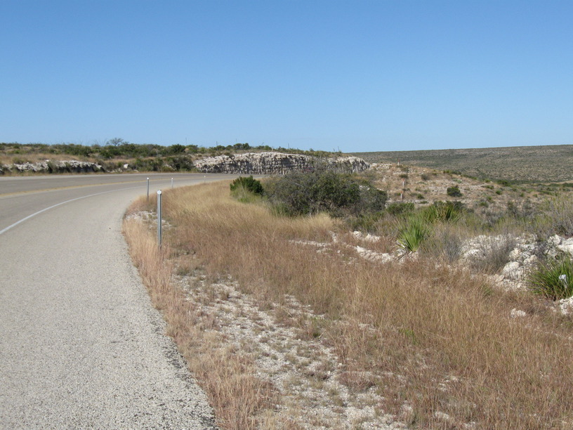
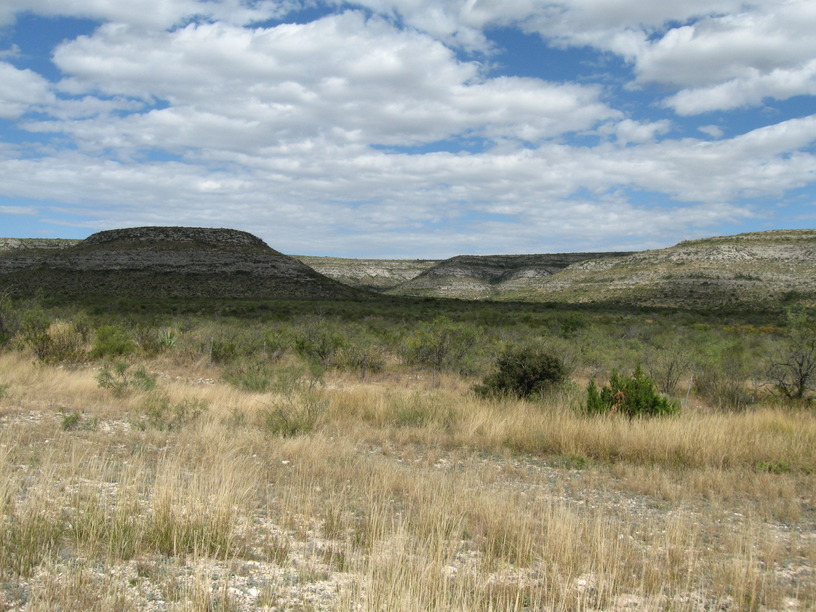
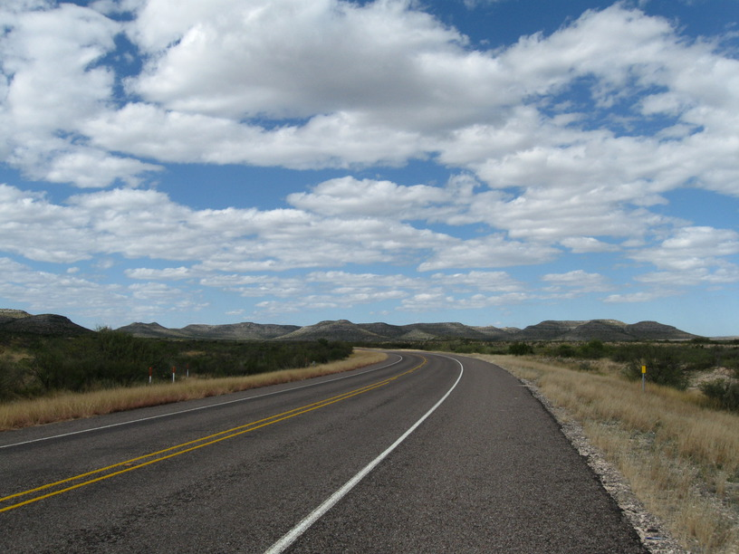
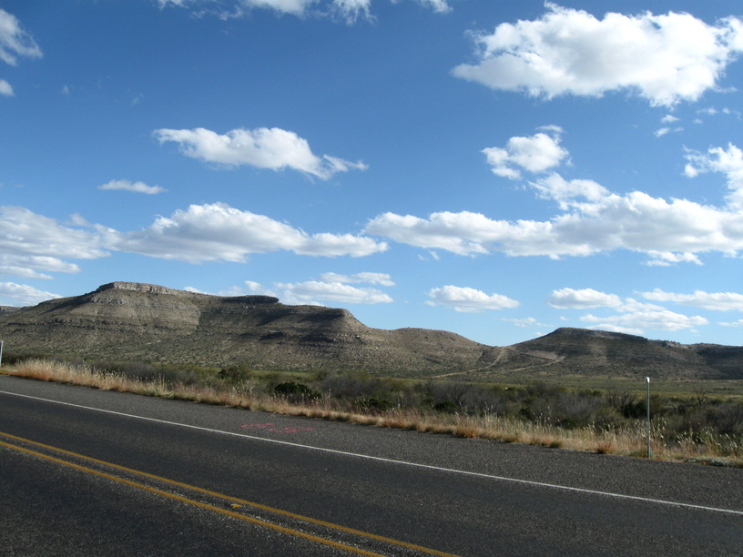
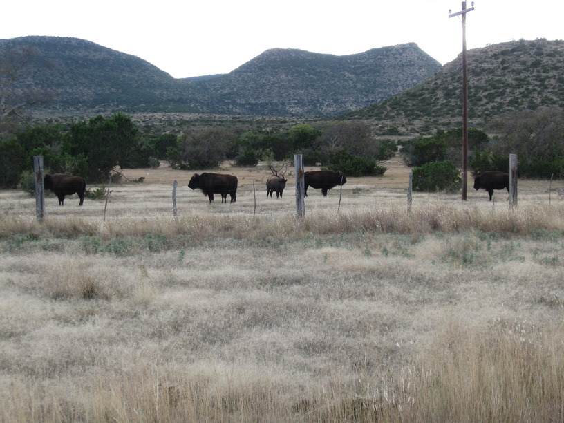
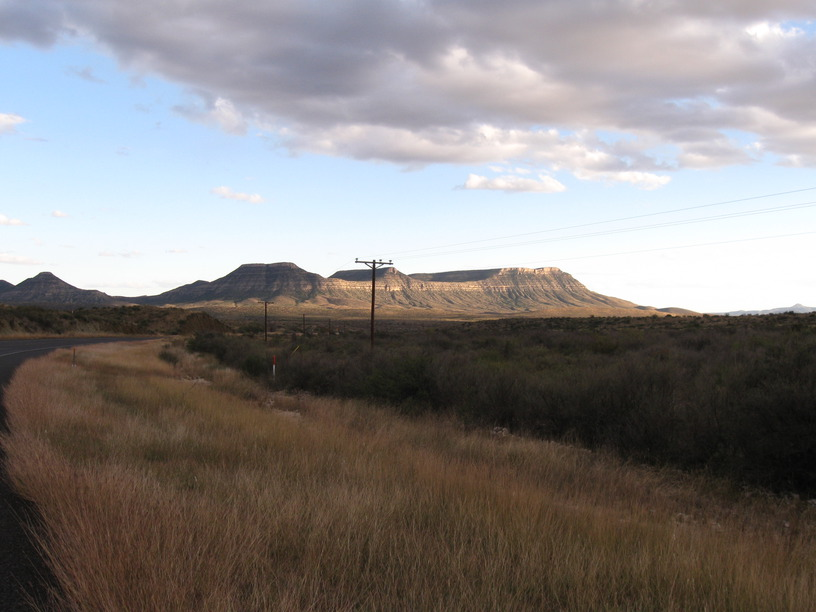
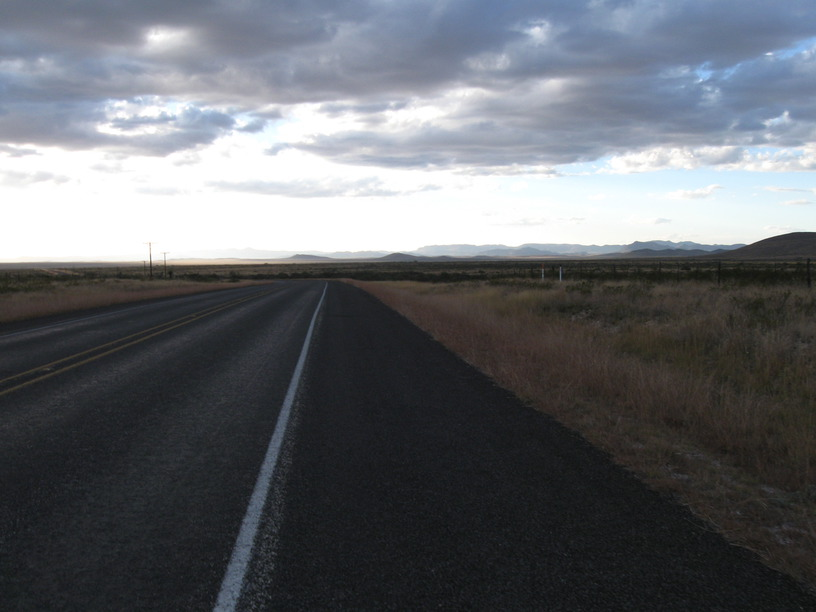

11 Nov 2008, Marathon, TX
Long day today—75 miles. I had planned to get up at 5:30 & be on the road by 7. Of course that didn't happen. I was hearing different insects & noises & in my early morning stupor convinced myself that one of the noises was a rattlesnake & I'd be better off staying in bed. So I got up at 6:45 & got riding at 8. I had headwinds all day & a flat tire so it wasn't until just after dark that I finished up.
I met one guy today who pulled over & hopped out of his truck to talk to me. His name is John & he's some kind of USAF flight demo team pilot. He said he always tries to talk to cycle tourists as they come through.
Tonight I'm staying in Marathon, TX in a papercrete building that is part of what's basically a hippie compound, so far as I can tell. I made this connection through warmshowers.org & my host, Stan, did a tour of his own before deciding he'd spend some time here in Marathon helping out & providing some skilled labor.








